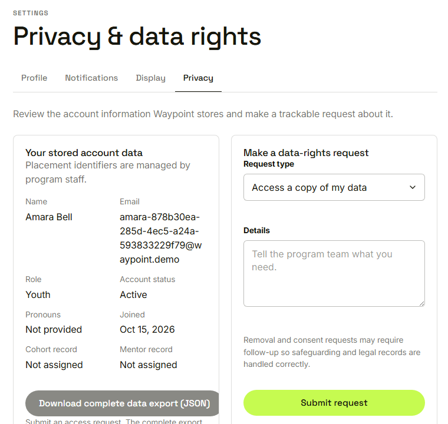
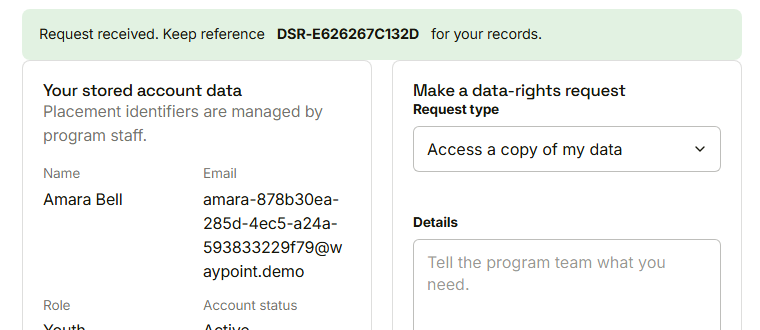
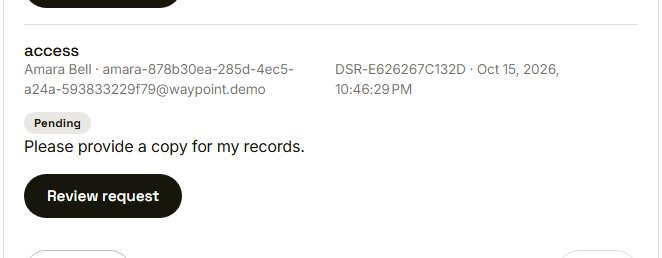

Waypoint · Video 109
Protecting personal information
What Waypoint keeps, who sees it, and how people can ask
Kept with care
Only what the program needs
Access limited to staff and the assigned mentor
Sensitive fields protected where they are stored
Secrets and sensitive details left out of logs
Your stored account data

What Waypoint holds, and a way to ask
A request with a reference

Request received: keep the reference
Staff review and fulfil

Requester, type, reference, time and status
Things to remember
Only what is needed is kept, and few people can see it
People can ask for access, correction, removal or withdrawal
Every request has a reference and is recorded
Staff verify first; the full export unlocks afterwards